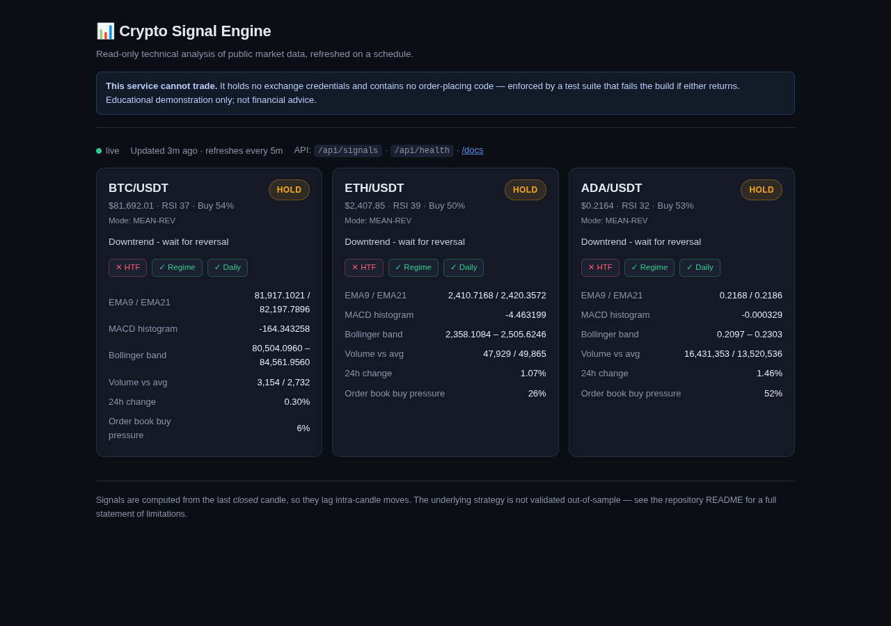
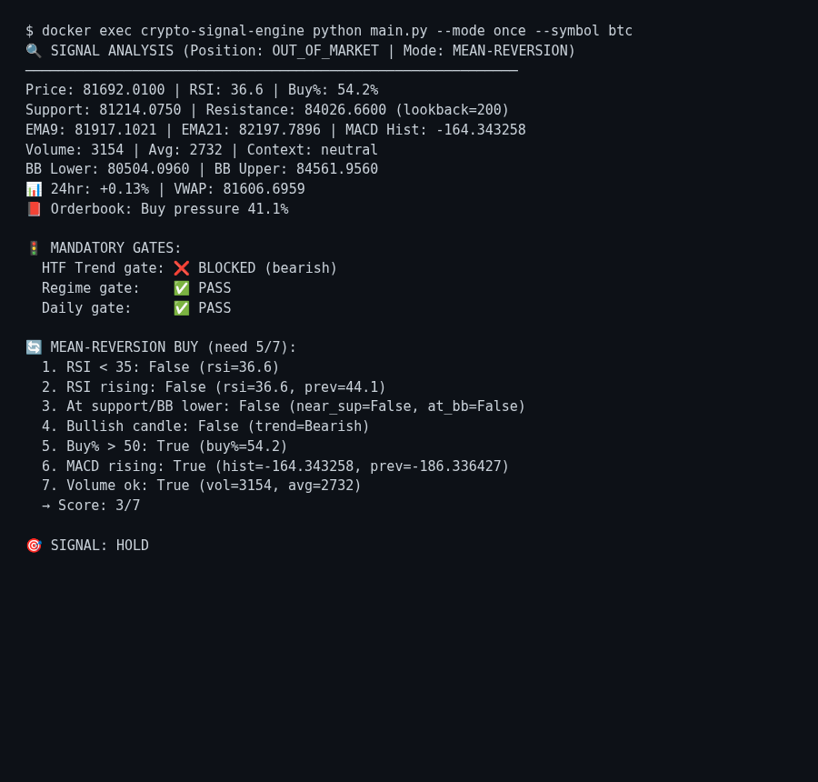
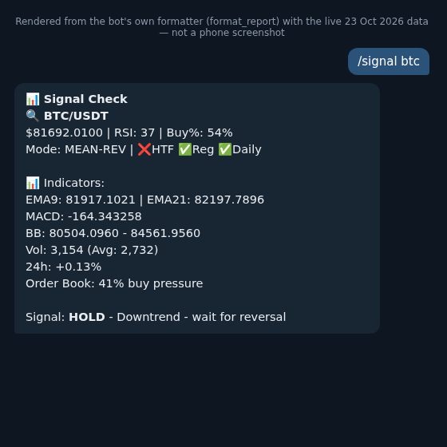
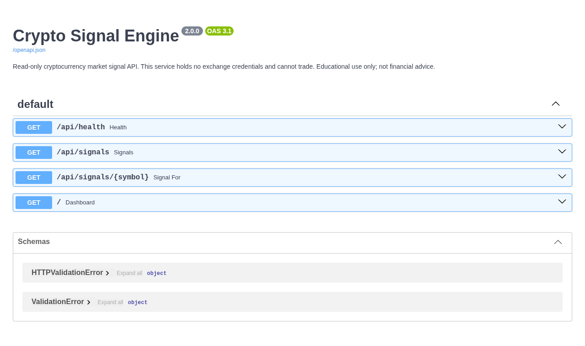

I turned my crypto trading bot into a signal engine that cannot trade. Here's how it reads BTC, ETH and ADA
A test automation engineer's walkthrough of a read-only market signal engine on a Raspberry Pi: the indicators, the gates, the Telegram bot, the live data, and what it can and cannot tell you about the market.
Matt Karimov · Test automation engineer · October 2026
Not financial advice. This is a personal engineering project. It reads public market data and prints technical indicators. It doesn't predict prices, its strategy has only been tested in-sample, and nothing below is a recommendation to buy or sell anything.
From trading bot to signal engine
This project started as a live Binance trading bot written in Python. It watched Bitcoin, Ethereum and Cardano on four-hour candles and placed real orders when its rules lined up.
When I closed the exchange account, I had a choice. I could add a DRY_RUN = True flag and keep the order code "just in case", or I could delete the trading capability completely.
I deleted it. A repository that is one boolean away from placing an order is a risk, not a feature. What's left is a read-only signal engine:
- It reads public market data (prices, candles, order book) with no API key.
- It computes the same technical signals the bot used to trade on.
- It reports them three ways: a Telegram bot, a web dashboard, and a JSON API.
The last trading-capable version is preserved at a git tag, so the history is honest and nothing is lost.
Live data first
This is the dashboard, captured from the running container on my Raspberry Pi on 23 October 2026 at 19:43 UK time:

At that moment:
| Coin | Price (USDT) | RSI (4h) | Signal | Why |
|---|---|---|---|---|
| BTC | 81,692.01 | 37 | HOLD | Downtrend, wait for reversal |
| ETH | 2,407.85 | 39 | HOLD | Downtrend, wait for reversal |
| ADA | 0.2164 | 32 | HOLD | Downtrend, wait for reversal |
All three say HOLD, and the reason is the same: the 4-hour trend gate (the red ✕ HTF badge) is blocked because the short-term average is below the longer one. The rest of this article explains what that means and how the engine arrives at it.
How it works
The pipeline
Public Binance market data (no API key)
└─ 4h candles (300), daily candles (250), 24h ticker, order book
└─ indicators: RSI, EMA9/EMA21, MACD, Bollinger Bands, ATR, volume, buyer %
└─ 3 mandatory gates: 4h trend, market regime, daily trend
└─ mode: TREND-FOLLOWING or MEAN-REVERSION
└─ condition score (e.g. 5 of 7) → BUY / SELL / HOLD
└─ Telegram · web dashboard · JSON API
One function, evaluate_symbol(), does the whole computation and returns a plain dictionary. The Telegram bot, the dashboard, the API and the tests all read that same dictionary, so the three outputs can never disagree about the logic.
Step 1: the indicators
For each coin, the engine looks at the last closed 4-hour candle (the current one is still moving, so its values would change under you) and calculates:
- RSI (14): how stretched recent moves are. Below 35 is usually called oversold, above 65 overbought.
- EMA9 and EMA21: a fast and a slow average. EMA9 above EMA21 means short-term momentum is up.
- MACD histogram: the gap between two averages, minus its own average. Rising means downward momentum is fading.
- Bollinger Bands: a band two standard deviations around the 20-period average. Touching the lower band is a common "stretched down" sign.
- Volume against its average, and buyer %: the share of volume that came from buyers (Binance's taker-buy volume).
Step 2: three gates that must all pass
Before any BUY is considered, three gates act like a pre-flight check:
| Gate | Question | Blocks when |
|---|---|---|
| HTF trend | Is the 4h 10-period average more than 1% below the 20-period one? | bearish |
| Regime | Is the market too volatile (ATR more than 4% of price)? | volatile |
| Daily trend | Is the daily 50-day average below the 200-day (a "death cross")? | death cross |
On 23 October, the regime gate passed for all three coins (the market was "ranging", not wild), but the 4h trend gate was blocked for all three. That alone is enough to force HOLD.
Step 3: trend mode or mean-reversion mode
The engine runs in one of two modes:
- Trend-following: used when the daily chart is in a golden cross and the 4h trend isn't bearish. A BUY needs 5 of 8 conditions, including EMA9 above EMA21 and a positive MACD.
- Mean-reversion: used otherwise. It looks for oversold bounces at support. A BUY needs 5 of 7 conditions.
Here is the full mean-reversion scorecard for Bitcoin from the same run:

Bitcoin scored 3 of 7:
- Passed: buyers slightly outnumbered sellers (54%), MACD was rising, and volume was above average.
- Failed: RSI wasn't below 35 yet (36.6), RSI was falling, price wasn't at support or the lower band, and the candle was red.
Ethereum and Cardano each scored 4 of 7, so all three fell short of five even before the trend gate. Cardano was the closest to a textbook oversold setup (RSI 32.2), but its RSI was still falling.
This is the part I like most as a tester: every decision is traceable. You can see exactly which conditions passed and failed, and why the answer is HOLD. Nothing is a black box.
Talking to it on Telegram
The engine runs a small Telegram bot through the python-telegram-bot library. It only answers four commands, all read-only:
| Command | What you get |
|---|---|
/signal |
Report for all three coins |
/signal btc (or eth, ada) |
Report for one coin |
/status |
Service status (always "read-only, no trading") |
/ai |
Usage stats for the optional LLM analyst |
/help |
The command list |
There's deliberately no /buy, /sell, /start, /stop or /balance. Those existed when it was a trading bot and were deleted with the order code.
This is the reply to /signal btc, rendered from the bot's own formatting function with the same live data:

Note: this image is rendered from the bot's real output text, not a phone screenshot.
Set up your own bot (5 minutes)
- In Telegram, message @BotFather, send
/newbot, and pick a name. BotFather gives you a bot token. Treat it like a password. - Send any message to your new bot, then open
https://api.telegram.org/bot<TOKEN>/getUpdatesin a browser. Your chat ID is thechat.idnumber in the reply. - Put both in a
.envfile next todocker-compose.yml. Never commit it:
TELEGRAM_BOT_TOKEN=... # from BotFather
TELEGRAM_CHAT_ID=... # from getUpdates
ZAI_API_KEY=... # optional, only for the LLM analyst
- Start the two containers, one for the Telegram bot and one for the dashboard:
docker compose up -d --build
curl -s localhost:8300/api/health
The health check answers with "trading_enabled": false, plus how old the cached data is.
The bot code in brief
Commands map to small async handlers. The /signal handler calls the same scan() function the command line uses:
async def _cmd_signal(update, context):
symbol_arg = context.args[0].lower() if context.args else None
result = scan(symbol_arg) # same computation as the dashboard and API
await update.message.reply_text(f"📊 *Signal Check*\n{result}", parse_mode="Markdown")
app = Application.builder().token(os.environ["TELEGRAM_BOT_TOKEN"]).build()
app.add_handler(CommandHandler("signal", _cmd_signal))
app.add_handler(CommandHandler("status", _cmd_status))
app.add_handler(CommandHandler("help", _cmd_help))
app.run_polling(drop_pending_updates=True)
A Raspberry Pi drops its connection now and then, so startup retries with a back-off (5s, 10s, 15s...). A global error handler logs Telegram's occasional "Bad Gateway" errors as one line rather than letting them crash the bot.
The dashboard and API
The second container is a small FastAPI app on port 8300, reachable only on my home network:

Every route is a GET. Sending a POST to /api/signals returns 405 Method Not Allowed, which I checked on the running container. A background loop refreshes the signals every 5 minutes and stores them in memory, so page views never multiply calls to the exchange.
curl -s localhost:8300/api/signals/ada
{
"symbol": "ADA/USDT", "signal": "HOLD", "mode": "MEAN-REV",
"price": 0.2164, "rsi": 32.2,
"explanation": "Downtrend - wait for reversal",
"gates": {"htf_trend": {"value": "bearish", "blocked": true},
"regime": {"value": "ranging", "blocked": false}}
}
Making "it cannot trade" a test, not a promise
I'm a test automation engineer, so "trust me, the trading code is gone" wasn't good enough. The repository has a test suite that reads the source code of every first-party file (using Python's ast module) and fails the build if any of these come back:
- an authenticated exchange call or any order method (
create_order,cancel_order...) - an exchange credential name (
BINANCE_API_KEY,apiKey,secret...) - the old function that let an LLM override a rule-based BUY or SELL
FORBIDDEN_CALLS = {"create_order", "create_market_order", "cancel_order",
"fetch_balance", "fetch_my_trades", "withdraw", ...}
# First-party code only: an allowlist, not a denylist.
SOURCE_DIRS = ("analysis", "connectors", "core", "notifications", "strategies", "web")
@pytest.mark.parametrize("path", list(_source_files()), ids=lambda p: p.name)
def test_no_order_placing_calls(path):
tree = ast.parse(path.read_text(), filename=str(path))
offenders = {
node.func.attr
for node in ast.walk(tree)
if isinstance(node, ast.Call)
and isinstance(node.func, ast.Attribute)
and node.func.attr in FORBIDDEN_CALLS
}
assert not offenders, f"{path.name} calls forbidden exchange method(s): {sorted(offenders)}"
On 23 October: 76 tests passed. I also checked the running container directly, not just the source tree:
docker exec crypto-signal-web sh -c 'env | grep -ci BINANCE' # 0
docker exec crypto-signal-web python -c "import analysis.ai_analyst as a; print(hasattr(a,'arbitrate_signal'))" # False
curl -s -o /dev/null -w '%{http_code}' -X POST localhost:8300/api/signals # 405
One detail that matters: the suite walks an allowlist of my own folders. A denylist over every .py file in the project would also walk .venv, find the order methods inside the installed ccxt library, and fail on code I didn't write.
Can it predict the market?
Short answer: no, and it isn't designed to. What it can honestly do is narrower:
- It describes the current state of BTC, ETH and ADA in a consistent, rule-based way: trend, momentum, how stretched the price is, and whether its own entry conditions are met.
- It saves you staring at charts. One
/signalmessage tells you whether anything interesting has happened since the last 4-hour candle. - It shows how the coins relate. On 23 October all three had the same gate blocked, which is typical: altcoins like ADA tend to move with Bitcoin. The config even has an optional filter that blocks altcoin BUY signals while Bitcoin is weak.
What it can't do:
- It hasn't been validated. The backtest in the README covers one coin (ADA) over six months, with the rules tuned on that same data. The best version showed +1.41% over 22 trades, while ADA fell 73%. That's in-sample, it isn't evidence of an edge, and the README says so next to the numbers.
- It lags. Signals come from the last closed 4-hour candle, so a sharp move inside the current candle won't show until it closes.
- Live values move between calls. The order-book "buy pressure" is a snapshot. It read 6% on the dashboard and 41% in a scan a minute later. Treat it as noise, not a signal.
What I found while writing this
Writing about a system makes you look at it more closely than running it does. Two honest findings:
- The daily-trend gate never fires live. The code that builds the daily averages names the columns
SMA_50andSMA_200, but the signal service looks them up assma_50andsma_200. The lookup always misses, so the daily trend shows as "unknown". The gate therefore never blocks, and trend-following mode never switches on. On 23 October the daily 50-day average (about 81,800) was above the 200-day (about 72,900), so Bitcoin was actually in a golden cross the engine couldn't see. It made no difference that day, because the 4h gate was blocked anyway, but it's a real bug, and the dashboard's green "Daily ✓" badge hides it. The fix is a one-line change plus a test that asserts the daily trend is never "unknown" when 250 days of data are present. - The LLM analyst isn't wired in. The code that asks a language model (Z.AI GLM) for market commentary still exists, but nothing calls it in the live path.
/aireports zero calls. That's safe, because the model was never allowed to make decisions, but the README's "LLM analyst layer" overstates what's running today.
Both are exactly what a QA review should find: the system worked, its health checks were green, and it was still quietly doing less than it said.
Rules I'd keep
- Delete dangerous capability rather than disabling it, and keep the history in a git tag.
- Enforce safety claims with tests that read the code, and check the running container, not just the repository.
- Make every signal explainable: gates, a score, and a plain-English reason.
- Write the limitations next to the numbers, especially for anything that looks like a trading result.
- Keep the LLM observational. A model that can override a rule-based decision is a model you now have to test as a trader.
I'm a test automation engineer working towards AI quality and LLM evaluation. The next step for this project is an evaluation harness for the LLM analyst, scored on schema validity, refusal on bad input and self-consistency rather than on market returns.